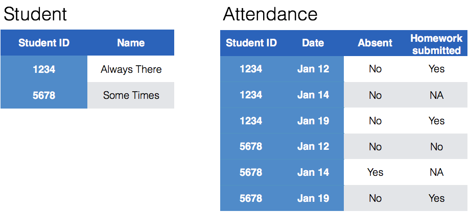

Messy (3)
Messy (3): Multiple observational units are stored in the same table.
What does that mean? The key is split, i.e. for some values all key variables are necessary, while other values only need some key variables.

Heike Hofmann
Messy (3): Multiple observational units are stored in the same table.
100 patients are randomly assigned to a treatment for heart attack, measured 5 different clinical outcomes.
100 patients are randomly assigned to a treatment for heart attack, measured 5 different clinical outcomes.
Randomized complete block trial with four fields, four different types of fertilizer, over four years. Recorded total corn yield, and fertilizer run off
Randomized complete block trial with four fields, four different types of fertilizer, over four years. Recorded total corn yield, and fertilizer run off
Cluster sample of twenty students in thirty different schools. For each school, recorded distance from ice rink. For each student, asked how often they go ice skating, and whether or not their parents like ice skating
Cluster sample of twenty students in thirty different schools. For each school, recorded distance from ice rink. For each student, asked how often they go ice skating, and whether or not their parents like ice skating
For each person, recorded age, sex, height and target weight, and then at multiple times recorded their weight
For each person, recorded age, sex, height and target weight, and then at multiple times recorded their weight
only patient ID is needed for variables in italics
Messy (3): Multiple observational units are stored in the same table.
What does that mean? The key is split, i.e. for some values all key variables are necessary, while other values only need some key variables.
Splitting into separate datasets:

The-Numbers website publishes weekly charts of the gross income of all movies playing across the US. A set of cleaned data called box with movies for the last five years is available in the classdata package.
# devtools::install_github("heike/classdata")
library(classdata)
head(box, 4)## Rank Rank.Last.Week Movie Distributor Gross Change
## 1 1 1 Black Panther Walt Disney 66306935 -41
## 2 2 NA Red Sparrow 20th Century Fox 16853422 NA
## 3 3 NA Death Wish MGM 13010267 NA
## 4 4 2 Game Night Warner Bros. 10412496 -39
## Thtrs. Per Thtr. Total.Gross Week Date
## 1 4084 16236 501706972 3 2018-03-02
## 2 3056 5515 16853422 1 2018-03-02
## 3 2847 4570 13010267 1 2018-03-02
## 4 3488 2985 33240262 2 2018-03-02What are the key variables? Why is the key split?
Movie name, Date and Distributor.Gross, Thtrs.Plan: separate movie information from box office information
Idea for separation: we want to get a set of movies together with their Distributor and ideally their release date (which we do not have).
Instead of release date we want to get the date of the first time that we see a movie in the boxoffice.
Let’s also keep track of how many weeks a movie has been released at that time (should be 1 - when will it be different for sure?)

For this your turn use the box data from the classdata package
movie that consists of movie, distributor, date of first time the movie shows up in the box office, and the number of weeks the movie has been released at that time.summarize to find the first time a movie shows up in the box office and find the related number of weeks. Does Movie uniquely describe a movie?
movies <- box %>% select(Movie, Distributor) %>% unique()Does that make a movie unique?
movies %>% count(Movie) %>% arrange(desc(n))## # A tibble: 3,182 x 2
## Movie n
## <chr> <int>
## 1 Beauty and the Beast 2
## 2 Breathe 2
## 3 Concussion 2
## 4 Entertainment 2
## 5 Girlhood 2
## 6 Gold 2
## 7 Leviathan 2
## 8 Mama Africa 2
## 9 Phantom 2
## 10 Reset 2
## # ... with 3,172 more rowsGet the Week info for the first time we see each Movie and Distributor combo:
movies <- box %>% group_by(Movie, Distributor) %>%
summarise(
firstDate = Date[which.min(Week)],
firstWeek = min(Week, na.rm=TRUE))
head(movies)## # A tibble: 6 x 4
## # Groups: Movie [6]
## Movie Distributor firstDate firstWeek
## <chr> <chr> <date> <dbl>
## 1 ’71 Roadside Attractions 2015-02-27 1.00
## 2 [REC] 4: Apocalypse Magnolia Pictures 2015-01-02 1.00
## 3 1,000 Rupee Note Kino Lorber 2016-09-23 1.00
## 4 1,000 Times Goodnight Film Movement 2014-10-24 1.00
## 5 10 Cloverfield Lane Paramount Pictures 2016-03-11 1.00
## 6 10 Days in a Madhouse Cafe Pictures 2015-11-20 2.00movies %>% group_by(Movie) %>% mutate(n = n()) %>% arrange(desc(n))## # A tibble: 3,201 x 5
## # Groups: Movie [3,182]
## Movie Distributor firstDate firstWeek n
## <chr> <chr> <date> <dbl> <int>
## 1 Beauty and the Beast Lopert Pictures Cor… 2016-02-12 1.00 2
## 2 Beauty and the Beast Walt Disney 2017-03-17 1.00 2
## 3 Breathe Bleecker Street 2017-10-13 1.00 2
## 4 Breathe Film Movement 2015-09-11 1.00 2
## 5 Concussion Radius 2013-10-04 1.00 2
## 6 Concussion Sony Pictures 2015-12-25 1.00 2
## 7 Entertainment B4U Movies 2014-08-08 1.00 2
## 8 Entertainment Magnolia Pictures 2015-11-13 1.00 2
## 9 Girlhood "" 2015-04-10 598 2
## 10 Girlhood Strand 2015-01-30 1.00 2
## # ... with 3,191 more rowsbox %>% filter(Movie=="Mama Africa")## Rank Rank.Last.Week Movie Distributor Gross Change
## 1 88 79 Mama Africa ArtMattan Productions 481 -72
## 2 79 67 Mama Africa ArtMattan Productions 1689 -52
## 3 67 NA Mama Africa ArtMattan Productions 3495 NA
## 4 69 NA Mama Africa 3187 NA
## Thtrs. Per Thtr. Total.Gross Week Date
## 1 2 241 9808 3 2018-02-02
## 2 2 845 8123 2 2018-01-26
## 3 1 3495 3495 1 2018-01-19
## 4 1 3187 3187 816 2018-01-19